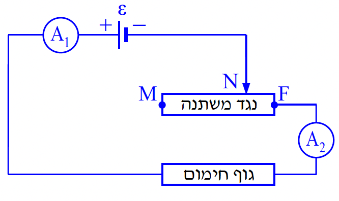
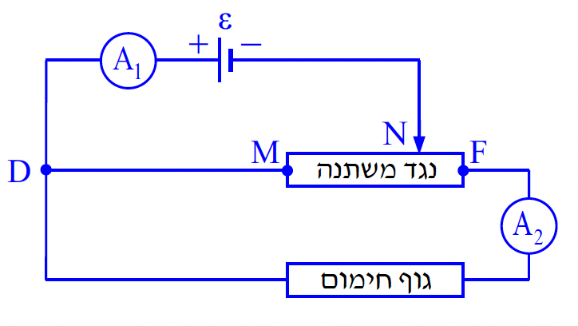

במעגל המוצג בתרשים 1 שלפניכם מחוברים גוף חימום שהתנגדותו R = 23Ω, נגד משתנה MF שהתנגדותו המרבית R = 23Ω, מקור מתח שהכא"מ שלו ε = 230 V ושני מדי־זרם A1 ו־ A2. ההתנגדויות של כל הרכיבים זניחות, מלבד אלה של שני הנגדים.

לפניכם ארבעה היגדים i-iv . קבעו מהו ההיגד הנכון ונמקו את קביעתכם.
מחזירים את נקודת המגע N לאמצע הנגד המשתנה MF.
(1) עוצמת הזרם בגוף החימום.
(2) כמות החום המתפתחת בגוף החימום במשך 5 דקות.

(1) האם במעגל זה הוריית מד־הזרם A1 גדולה מהוריית מד־הזרם A2, קטנה ממנה או שווה לה? נמקו.
(2) קבעו אם הנצילות של מעגל זה גדולה מנצילות המעגל שחישבתם בתשובתכם על סעיף ג, קטנה ממנה או שווה לה. נמקו את קביעתכם.